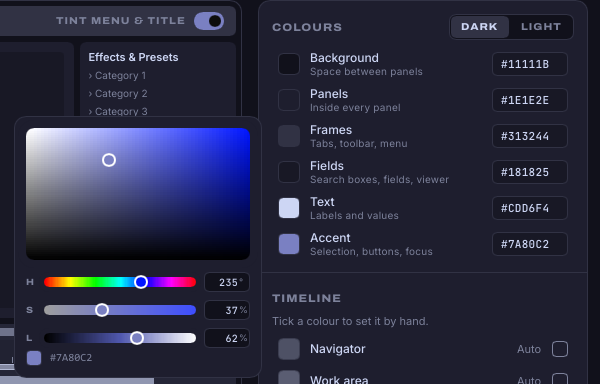
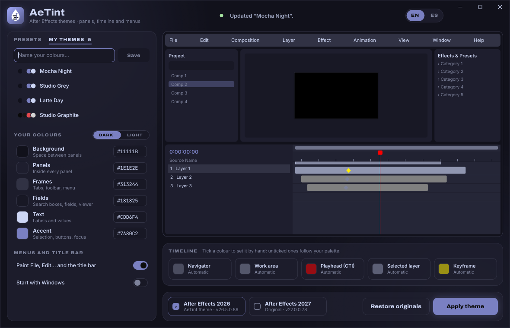
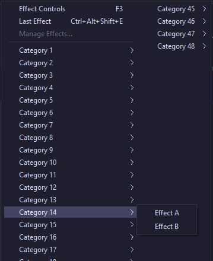

For After Effects on Windows
Your colours,
all over After Effects.
AeTint recolours the panels, the timeline, the Home screen, the File / Edit menus and the title bar with a palette you choose. One click to apply, one click to undo.

Pick a palette
Every preset comes in a dark and a light version, for AE's Darkest / Dark and Light modes. This is the same preview the app shows.
Catppuccin Mocha
The parts other themes can't reach
After Effects keeps its colours in four different places. AeTint changes all of them, so nothing is left in Adobe grey.
-
Panels
Buttons, fields, lists, tabs and the accent colour. Hundreds of greys follow your six colours by lightness.
dvaui.dll -
Timeline
Time navigator, ruler, work area, playhead, layer bars and the graph editor, with optional colours of your own.
AfterFXLib.dll -
Home screen
The start screen you see before opening a project, in each brightness.
UXP · com.adobe.ccx.start -
Menus & title bar
File, Edit, the multi-column Effect menu, submenus, separators and the window's title bar.
AeTint.aex plugin
Made for the way you work
- Six colours, one palette
- Background, panels, frames, fields, text and accent. Every in-between shade is placed for you.
- Exact colours
- A colour picker with hue, saturation and lightness sliders, and boxes to type values or a hex code.
- Your themes, shareable
- Save palettes under My themes and export them as
.aetintfiles. A double-click opens one in AeTint. - Your own splash screen experimental
- Pick an image for AE's start-up screen; the panel and logo follow your palette.
- Undo is always there
- Adobe's files are backed up before anything changes. Restore puts them back.
- Light on your PC
- About 35 MB of memory, no GPU, and sharp at 100 %, 125 % or 150 % display scaling.




Three steps
- 1
Install
Run
AeTint-Setup.exe. It installs for your user, no administrator rights needed. - 2
Choose
Start from a preset or set your own colours, for Dark and Light.
- 3
Apply
Close After Effects, tick your versions and press Apply theme. Windows asks for permission the first time.
Compatibility
Windows 10 and 11. Files are found by name, not by fixed positions, so new builds keep working as long as Adobe keeps the format.
| After Effects | Panels & timeline | Home screen | Menus & title bar |
|---|---|---|---|
| 2027 | Tested | Tested | Yes |
| 2026 | Tested | Tested | Tested |
| 2025 | Files checked | Very likely | Yes |
| 2024 | Tested | Tested | Tested |
| 2020 – 2023 | Files checked | — | Yes |
Files checked means AeTint reads and themes that version's files correctly, but it hasn't been tried in a running copy yet. If you use one of them, tell us how it goes.
Questions
Does it change After Effects permanently?
It rewrites a few of Adobe's files in place, keeping their exact size, and saves the originals first. Restore in AeTint, or uninstalling with Restore After Effects ticked, puts everything back.
Why does it ask for administrator permission?
After Effects lives in C:\Program Files, which only administrators can write to. The first Apply theme asks once and then lets your user update those specific files, so it doesn't ask again.
After Effects updated and the theme is gone.
Updates replace Adobe's files with new ones. Open AeTint and press Apply theme again; it backs up the new files first.
What is AeTint.aex in my Plug-ins folder?
A tiny startup plugin that loads the menu painter when After Effects opens, so the menus are themed from the first frame with nothing running in the background. It doesn't appear under effects.
Is it safe? My antivirus complained.
AeTint is open source and every release is built by GitHub Actions from the public code. The optional menu watchdog loads a DLL into After Effects, which some antivirus heuristics dislike; the default plugin path avoids that.
Is it free?
Yes. AeTint is free and open source under the GPL-3.0 licence.